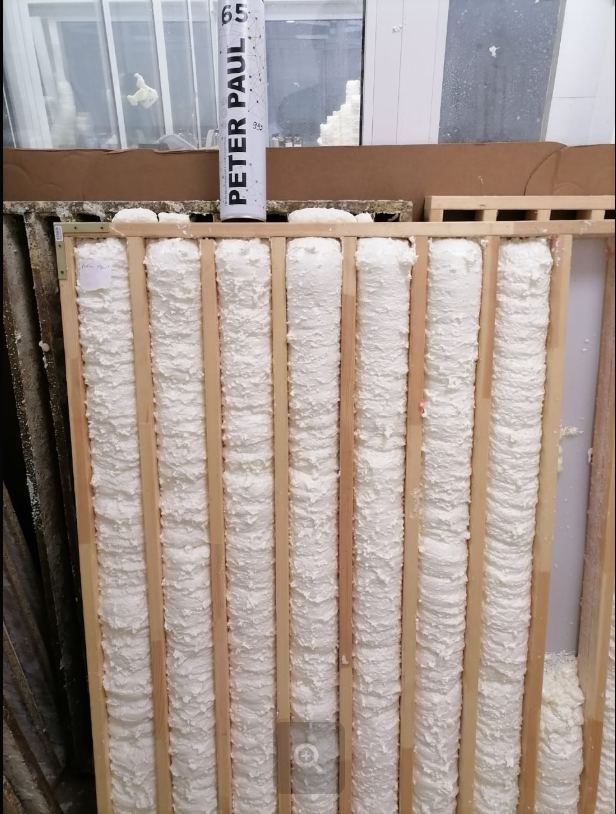

Вид СТМ · MIKA / TORRA
Монтажные пены
Подбирайте пену по задаче покупателя — не «какая подешевле», а «для чего».
- Щели и отверстия → бытовая MIKA 50 с трубкой.
- Межкомнатные двери / окна / входная дверь → проф MIKA 65 или TORRA PRO 65.
- Новостройка / усадка → эластичные: огнестойкая и/или зимняя проф.
- Огнеопасные места → только огнестойкая MIKA.
- Приклейка материалов → клей-пена, не обычная монтажная.
К проф. пене предлагайте пистолет, если его нет у клиента.



Тест для самоконтроля
Шпаргалка по пенам. Отметьте ответы и нажмите «Проверить».